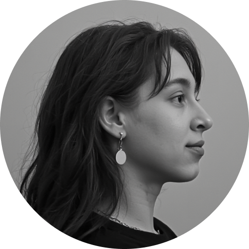

коммуникационный и бренд-дизайнер

KSUSHA GERNIK
Коммуникационный и бренд-дизайн для проектов, которые хотят быть понятными и сильными визуально.
ОБО МНЕ
8+ лет в коммуникационном и бренд-дизайне. Проектирую визуальные системы, которые помогают быстрее понимать и принимать решения.